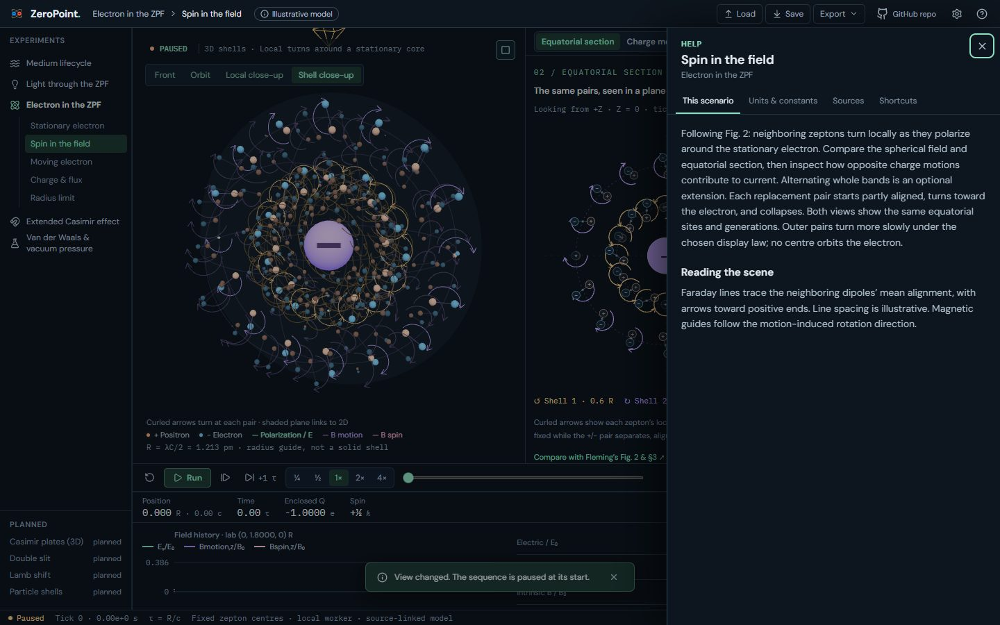
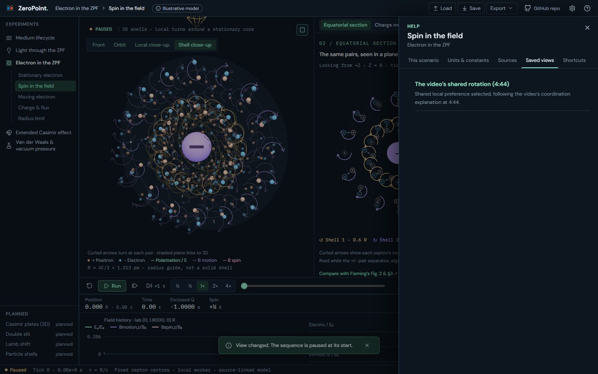
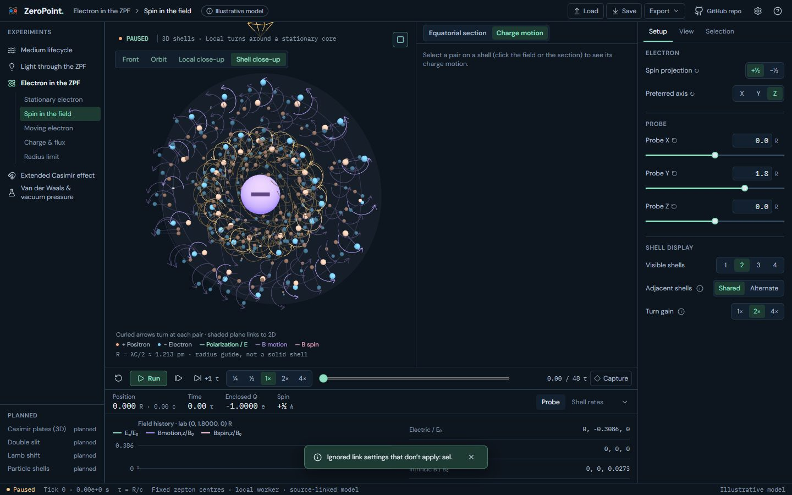
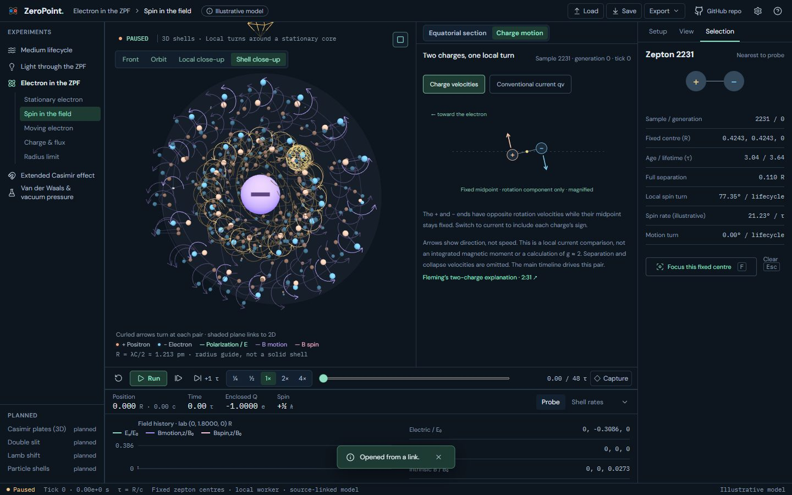
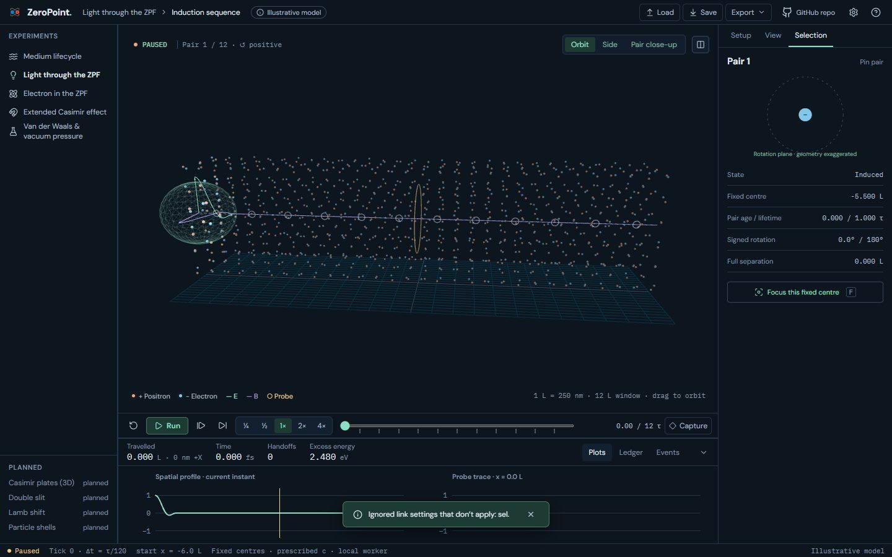
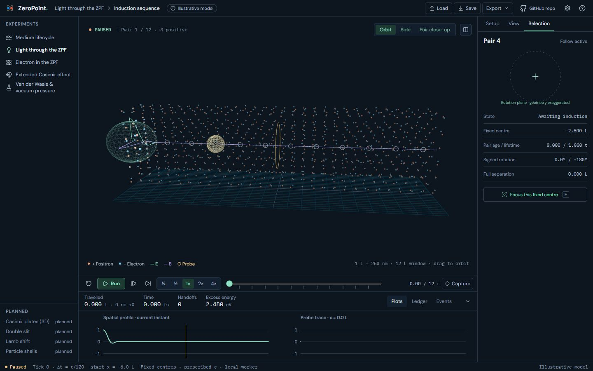

UI 16b · Saved views and selection links: before and after
Help gains a Saved views tab: named links to states worth returning to. Electron's 'Explore the video's shared rotation' button moves there from the Shell rates dock tab, as planned; following it sets Shared, opens Charge motion beside the field and selects pair 2231. Links now also carry the selection where it has a stable index: Electron's sample (sel=2231) and Light's pinned pair (sel=3 opens with pair 4 pinned). Medium's selection lasts only one dipole generation, so it stays out of links. A selection outside the linked scenario is dropped with the other invalid settings.
Real screens: "before" runs the layer below, and "after" runs this layer. Click an image to open it at full size. Regenerate with node scripts/compare-screens.mjs --before ../16a-url-state --out docs/ui-previews/16b-saved-views --set views --title 'UI 16b · Saved views and selection links' --description 'Help gains a Saved views tab: named links to states worth returning to. Electron'\''s '\''Explore the video'\''s shared rotation'\'' button moves there from the Shell rates dock tab, as planned; following it sets Shared, opens Charge motion beside the field and selects pair 2231. Links now also carry the selection where it has a stable index: Electron'\''s sample (sel=2231) and Light'\''s pinned pair (sel=3 opens with pair 4 pinned). Medium'\''s selection lasts only one dipole generation, so it stays out of links. A selection outside the linked scenario is dropped with the other invalid settings.'.
Electron · Spin: Help › Saved views (the shared-rotation tour, moved from the Shell rates tab)




Electron · after following the saved view: Shared, Charge motion, pair 2231 selected




Light · #/light?sel=3 opens with pair 4 pinned



